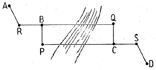
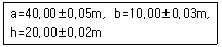
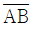
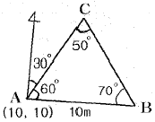
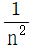
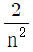
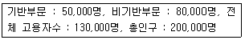
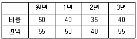
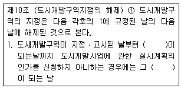

도시계획기사 (2007-05-13 기출문제)
1과목: 도시계획론
1. 우리나라 도시 및 주거환경정비법에 근거한 도시정비사업 유형으로 거리가 먼 것은?
- 주택재개발사업
- 주택재건축사업
- 주거환경개선사업
- 도시재개발사업
(정답률: 알수없음)

2. 동일한 도시권에 속하는 도시문제를 광역적으로 관리하는 방식 중에서 민주성이 가장 높은 것은?
- 협의회에 의한 공동처리방식
- 행정구역 변경에 의한 방식
- 자치단체조합의 설치방식
- 광역정부의 설치방식
(정답률: 알수없음)
3. 다음 인구추정 방식 중 기준년도의 인구와 출생률, 사망률 및 인구이동 등의 변화요인을 고려하는 집단생잔법을 나타내는 것은?
- Pn=Po(1+rn)
- y=ao+a1X+a2X2
- Pn=K/(1+en+bn)
- Pt=Po+Bo-t-Do-t-Oo-t
(정답률: 알수없음)
4. 다음 중 도시 공공시설에 해당되지 않는 것은?
- 구거
- 방음설비
- 사방설비
- 행정청이 설치한 저수지
(정답률: 알수없음)
5. 다음 중 공기업 경영의 일반적인 특성이라고 볼 수 없는 것은?
- 경제성
- 공공성
- 영리성
- 독립채산성
(정답률: 알수없음)
6. 동심원이론에서 제시한 도시공간구조 분화 중 제 3권에 속하는 지대는 다음 중 어느 것인가?
- 중심 업무지대
- 통근자 지대
- 고급주택지대
- 노동자 주택지대
(정답률: 알수없음)
7. 도시개발의 의의를 설명한 내용 중 가장 적절한 것은?
- 도시변화에 따른 수요에 대응하여 도시 발전을 도모하기 위한 일련의 의도적 노력
- 도시 경제의 활성화 방안
- 농촌적 토지이용을 도시적 토지이용으로의 전환 작업과정
- 도시 성장 추세를 공간적으로 수용키 위한 도시 공간의 확대 작업
(정답률: 알수없음)
8. 패트릭 게데스(patrick Geddes)가 주장한 도시계획의 내용으로 가장 적절한 것은?
- 도시계획은 물적계획으로서 각종 도시시설을 구체적으로 구상하여야 한다.
- 도시계획은 장기계획이므로 최소한 향후 50년 후를 목표로 계획하여야 한다.
- 도시계획은 도시의 본질인 인간을 중심으로 해야 하므로 정주생활계획을 출발점으로 해야 한다.
- 도시계획은 물적계획과 빗물적계획(사회, 경제계획)을 통합한 계획이어야 한다.
(정답률: 알수없음)
9. 도시 또는 지역의 성장을 예측하기 위하여 시간변화에 대한 정량적 변화 예측이나 구성 비율의 변화 관계를 분석하는 방법으로 도시 내부에 일어나는 경제활동의 변화를 국가적 공간 규모와 구역이나 지방 도시지역 등과 서로 비교하는 계량적 방법을 무엇이라고 하는가?
- 경제기반분석(economic base analysis)
- 투입산출분석(input-output analysis)
- 변이할당분석(shift-share analysis)
- 소득지출분석(income-expenditure analysis)
(정답률: 알수없음)
10. 지역특화경제를 가장 알맞게 설명한 것은?
- 동일 종류의 다수 산업이 특정 지역에 집중하여 발생하는 이익
- 이종(異種) 산업들이 특정 지역에 집중하여 발생하는 이익
- 도시와 공장이 가까운 지역에 있기 때문에 발생하는 이익
- 도시화 경제를 말하는 것으로 특정 지역의 성장으로 얻는 이익
(정답률: 알수없음)
11. 다음 중 오픈 스페이스에 해당하지 않는 것은?
- 보행로
- 광장
- 공공주차장
- 수림지
(정답률: 알수없음)
12. 도심공동화의 일반적인 측정 기준은?
- 상주인구
- 유동인구
- 일자리수
- 연앙인구
(정답률: 알수없음)
13. 다음 중 중심지 이론의 기본가정이 아닌 것은?
- 평탄한 지형
- 구매력이 같은 인구가 균등분포
- 운송비는 거리에 비례
- 동일하지 않은 소득 기준
(정답률: 알수없음)
14. 어느 도시의 최근 10년간의 인구가 등차급수적으로 600000명에서 900000명으로 증가하였다고 가정할 때, 이 기간 동안의 연평균증가율은?
- 2.5%
- 5.0%
- 6.5%
- 7.5%
(정답률: 알수없음)
15. 독시아디스(C,A. Doxiadis)가 인간정주학(EKISTICS)에서 거대도시(metrpoplis)로 정의한 인구규모(기준)는 얼마인가?
- 100만 이상
- 200만 이상
- 500만 이상
- 1000만 이상
(정답률: 알수없음)
16. 지방자치제도가 실시된 이루 우리나라 도시들간에 나타나는 현상이라고 볼 수 없는 것은?
- 핵발전소, 쓰레기 매립장 등의 관리ㆍ운영권을 둘러싼 갈등과 대립
- 지역경제적 파급효과가 큰 국가적 차원의 기능과 시설의 유치를 위한 노력과 갈등
- 장기발전계획을 수립하여 광역적 차원에서 지역의 발전을 도모하려는 인근 도시들간의 협력
- 환경보호와 지속가능한 개발을 위해 시정부 주도의 성장억제정책을 인근 도시들과 공동으로 추진
(정답률: 알수없음)
17. 도시의 성장과정 중 교외화 단계에 나타나는 현상이 아닌 것은?
- 주거지와 직장의 공간적 불균형 또는 분리현상
- 도심공동화 현상
- 인구의 외부유출로 인한 도시재정 궁핍 현상
- 과밀인구의 유출로 인한 도심의 주거환경 개선
(정답률: 알수없음)
18. 도시재개발 대상지역의 선정에는 물리적, 사회적, 경제적 기준 등이 적용된다. 다음 중 사회적 기준에 속하는 것은?
- 범죄 발생율, 인구 구조, 인구 밀도
- 불량한 주택, 교통 및 도로율
- 무허가 건물주의 집단, 사업의 수익성
- 지가의 하락, 가족의 수입
(정답률: 알수없음)
19. 다음 중 용도지역ㆍ지구의 지정 목적으로 보기 어려운 것은?
- 용도간 혼합이용을 통한 토지효율성 제고
- 외부불경제의 차단을 통한 개인재산권의 보호
- 부적절한 토지용도의 공간적 분리
- 위생 및 안전상 필요한 지저기준임
(정답률: 알수없음)
20. 도시계획의 이념에 대한 설명으로 옳은 것은?
- 권위주의(Authoritarian Planning) - 인도주의적 사조에 도시를 기하학적 형태로 구성하여 규칙성 및 통일성을 강조하고 충분한 녹지대를 설정하여 장래대도시화에 대비
- 효용주의(Utilitarian Planning) - 중상주의 대에 이윤추구의 경제정책에 기반을 둔 도시정책으로 최소한의 공공시설배치를 확보하고 나머지는 시장경제원리에 따라 토지룰 이용토록 유도
- 유토피아적 계획(Utopian Planning) - 도시를 계획할때는 단순히 기술적인 면보다는 사회학적 지식과 경험을 더 활용하여 단순한 평명계획이 아니라 공간에 대한 계획도 함께 추구
- 유기적 계획(Organic Plannig) - 기계문명의 발달로 인간이 갖고 있는 문제를 시술의 발달로 해결하고자 하여 도시의 조직을 기계조직과 연관
(정답률: 알수없음)
2과목: 도시설계 및 단지계획
21. 정지계획(整地計劃)의 기본방향과 가장 거리가 먼 것은?
- 토지는 침식과 부분적인 홍수의 피해를 방지할 수 있는 충분한 배수시설을 마련한다.
- 자연지반과 비슷하게 한다.
- 절토량과 성토량은 균형을 이루도록 한다.
- 구조물의 기초나 가로의 지반고를 고려하며 토량의 이동을 많게 한다.
(정답률: 알수없음)
22. 어느 단지의 미기후(微氣候)에 관한 설명으로 틀린 것은?
- 잔디면은 미기후상으로 보면 낮에는 덥고 밤에는 춥다.
- 지표 표면에 근접한 얇은 공기층의 기후 상태를 말한다.
- 디형과 지표면의 상태에 영향을 크게 받는다.
- 수목, 건물 등의 존재 여부에도 영향을 받는다.
(정답률: 알수없음)
23. 다음 중 단지내의 일반 건축용지, 녹지용지, 교통용지를 제외한 주택용지만에 대한 밀도는?
- 근린밀도(neighborhood density)
- 총밀도(gross density)
- 중밀도(medium density)
- 순밀도(net density)
(정답률: 알수없음)
24. 6ha의 대지에 1호당 순대지 200m2의 단독주택 필지를 계획할 때 몇 호 건설이 가능한가? (단, 순 주택용지율 60%, 도로 및 기타 공공용지율 40%)
- 120호
- 150호
- 180호
- 300호
(정답률: 알수없음)
25. 주거단지의 단지계획 목표설정시 고려하여야 할 일반적인 사항과 가장 거리가 먼 것은?
- 위생, 구조적 안전, 문화적 요소를 수용하는 정신적, 육체적 건강을 고려하도록 한다.
- 자연적 지형을 이용하여 토지이용의 효율성 제고와 개발비용의 최소화를 도모하도록 한다.
- 동일계층을 대상으로 규모, 양식 등 통일적인 공간구성으로 동질적 지역의식을 형성토록 한다.
- 어린이 놀이터를 둘 만한 공지가 확보되어야 하고 이용자의 행동권내에 편의시설을 설치토록 한다.
(정답률: 알수없음)
26. 다음 중 용적률을 산정하는 수식으로 옳은 것은?
- 연상면적/대지면적
- 연상면적/건축면적
- 연상면적/(대지면적-공지면적)
- 연상면적/(건축면적-공지면적)
(정답률: 알수없음)
27. 도시계획시설의 결정ㆍ구조 및 설치기준에 관한 규칙에 의하면 도로의 일반적 배치간격에서 주간선도로간 간격은 얼마 내외를 기준으로 하는가?
- 250m
- 500m
- 1km
- 2km
(정답률: 알수없음)
28. 도시계획시설의 결정ㆍ구조 및 설치기준에 관한 규칙에 의할 때 시롭게 개발되는 500세대 규모의 주거단지에 초등학교와 중학교가 각각 몇 개소씩 배치되는 것이 가장 적당한가?
- 초등학교 1개소, 중학교 1개소
- 초등학교 2개소, 중학교 1개소
- 초등학교 3개소, 중학교 없어도 됨
- 초등학교 4개소, 중학교 3개소
(정답률: 알수없음)
29. 다음 중 공동주택의 단위주거구성 형식으로 중앙에 엘리베이터나 계단실을 두고 많은 주호를 집중 배치하는 형식으로 부지조건에 따른 설계가 용이하고 설비의 집중화가 가능한 형식으로 가장 적합한 것은?
- 탑상형
- 편복도형
- 단차형
- 일반단층형
(정답률: 알수없음)
30. 인도 샨디갈(찬디가르 : Chandigarh)에 계획된 공원ㆍ녹지체계의 유형으로 일정 폭의 녹지가 직선적으로 길게 조성되는 유형은?
- 집중형
- 분산형
- 대상형
- 격자형
(정답률: 알수없음)
31. 주거단지에 조성되는 도로 유형 중 부정형한 지형에도 적용하기 용이하며, 통과 교통이 차단되어 보행자들이 안전하게 보행할 수 있으나, 개별 획지로의 접근성은 다소 불리한 도로 유형은?
- 격자형 도로
- T 자형 도로
- 쿨데삭형 도로
- S 자형 도로
(정답률: 알수없음)
32. 다음 중 건축법 등 관계 법령에 의하여 건축물의 용도를 단독주택과 공동주택 등으로 구분할 때 공동주택에 해당 되지 않는 것은?
- 연립주택
- 다세대주택
- 다중주택
- 기숙사
(정답률: 알수없음)
33. 대단위 주택단지 계획의 장점으로 볼 수 있는 것은?
- 주변 도시조직과의 부정합성 및 이웃 가구와의 유기적 연계성이 강화되어 단지 전체가 지역적 위계가 분명하게 건설된다.
- 상업시설이 단지의 중앙에 위치하여 시설의 이용이 편리하고 간선도로변 활성화 기회가 촉진된다.
- 표준주택형의 사용 등 표준화된 계획에 따라 단기간에 건설되므로 다양한 주거 환경을 조성하게 된다.
- 공공시설 비용을 넓게 확산시키기 때문에 기반시설 설치에 있어 비용이 절감된다.
(정답률: 알수없음)
34. 획지형태와 토지이용에 대한 설명으로 틀린 것은?
- 토지이용의 효율성을 위해서는 세장비가 가능한 커야된다.
- 세장비는 앞너비에 대한 깊이의 비(깊이/앞너비)를 말한다.
- 같은 길이의 도로에 많은 획지가 접하려면 가능한 한 단위획지의 앞너비는 최소가 되는 것이 좋다.
- 동서축 가구의 획지는 세장비를 작게 하는 것이 일조권의 확보에 유리하다.
(정답률: 알수없음)
35. 경사도의 정도와 활용 용도로 적합하지 않는 것은?
- 4% 이하 : 활발한 활동
- 6~10% 이하 : 일상적인 행위와 활동
- 20~50% : 테라스 하우스
- 50~60% : 언덕을 이용한 운동과 놀이에 적극 이용
(정답률: 알수없음)
36. 래드번(Radburn)계획의 기본원리와 가장 거리가 먼 것은?
- 슈퍼블럭의 구성
- 보ㆍ차의 혼용
- 공동의 오픈스페이스 조성
- 기능에 따른 도로 구분
(정답률: 알수없음)
37. 다음 중 공업단지에 대한 설명으로 틀린 것은?
- 인력확보가 용이한 주택지에 입지하는 것이 유리하다.
- 장래의 수요에 대비해 공장건물을 건립하기 위한 계획도 수립한다.
- 업무기능이나 연구개발 및 지원기능이 포함된 업무단지도 포함된다.
- 공단 위치, 규모, 유치업종, 배후도시 유무 여부 등에 따라 공간구성을 한다.
(정답률: 알수없음)
38. 다음 중 도시계획시설의 결정ㆍ구조 및 설치기준에 관한 규척에 의하여 교통광장을 구분할 때 교통광장에 속하지 않는 것은?
- 교차점광장
- 역전광장
- 중심대광장
- 주요시설광장
(정답률: 알수없음)
39. 주택건설기준 등에 관한 규정에 따르면 주택단지안의 도로폭이 최소 몇m 이상인 경우에 폭 1.5m 이상의 보도를 설치해야 하는갸?
- 6m 이상
- 8m 이상
- 10m 이상
- 12m 이상
(정답률: 알수없음)
40. 2차생활권(중생활권)을 기준으로 설치되는 시설로 적합한 것은?
- 쇼핑센터
- 우체국
- 초등학교
- 대학교 및 연구기관
(정답률: 알수없음)
3과목: 도시개발론
41. 그림과 같이 A점에서 D점에 이르는 도중 BC간에 폭 200m의 하천이 있어, P, Q점에 레벨을 세우고 교호수준측량을 하였다. A~D까지 전후 표척의 표고차가 다음과 같을 때 D점의 표고는 얼마인가? (단, A표고는 2.541m, 레벨 R에 세우고 A→B = -0.512m, 레벨 Q에 세우고 C→B = +0.267m, 레벨 P에 세우고 B→C = -0.229m, 레벨 S에 세우고 C→D = +0.632m)

- 2.413m
- 2.406m
- 2.562m
- 2.543m
(정답률: 알수없음)
42. 거리측량에서 정밀도가 ±(5mm+3mm/km)인 전파거리측량기로 3.8km의 거리를 측정할 때 예측되는 총오차는?
- ±10.25mm
- ±12.45mm
- ±14.75mm
- ±16.40mm
(정답률: 알수없음)
43. 거리관측에서 경사면 60m의 거리를 측정한 경우 경사보정량이 2cm로 될 때 양끝의 고저차는?
- 1.55m
- 2.⑤m
- 2.55m
- 3.⑤m
(정답률: 알수없음)
44. A, B, C의 3사람이 동일 조건하에서 측량을 실시하여 다음과 같은 값을 얻었다. 이때 최확값은? (단, A : 63° 48' 46“ ±4.0”, B : 63° 48' 43" ±4.8", C :63° 48' 48" ±5.6"
- 63° 48‘ 45.5“
- 63° 48‘ 44.9“
- 63° 48‘ 44.2“
- 63° 48‘ 44.0“
(정답률: 알수없음)
45. 트랜싯의 정오차 중 망원경을 정ㆍ반위로 측정하여 관측값을 평균하여도 소거되지 않는 오차는?
- 시준축과 수평축이 직교하지 않아서 발생한 오차
- 수평축과 연직촉이 직교하지 않아서 발생한 오차
- 연직축이 정확히 연직선상에 있지 않아 발생한 오차
- 회전축에 대하여 망원경의 위치가 편심되어 발생한 오차
(정답률: 알수없음)
46. 등고선의 성질에 대한 설명으로 옳지 않은 것은?
- 등고선 중 간곡선은 가는 긴 파선으로 표시한다.
- 서로 다른 등고성은 절대 만나지 않는다.
- 주곡선 간격은 1/50000 지형도의 경우 20m 이다.
- 등고선은 분수선과 직각으로 만난다.
(정답률: 알수없음)
47. 합수선이라고도 하며 지표가 낮거나 움푹 패인 점을 연결한 선은?
- 계곡선
- 산령선
- 경사변환선
- 경사선
(정답률: 알수없음)
48. 직육면체인 저수탱크의 용적을 구하고자 한다. 밑변 a, b와 높이 h에 대한 측정결과가 다음과 같을 때 부피오차는?

- ±10m3
- ±21m3
- ±27m3
- ±34m3
(정답률: 알수없음)
49. 삼각측량에서 C점의 좌표는 얼마인가? (단, 단위는

= 10m)
- (20.63, 17.14)
- (16.14, 20.63)
- (20.63, 16.14)
- (17.14, 16.14)
(정답률: 알수없음)
50. 면적이 22500m2인 정사각형의 토지를 축척 1/1000로 도면화 하려면 한 변의 길이를 몇 cm로 하면 되는가?
- 35cm
- 25cm
- 15cm
- 10cm
(정답률: 알수없음)
51. 수준측량기로부터 44m 떨어진 곳에 세운 표척의 읽음값이 1.125m였고 기포를 표척 방향으로 2눈금 이동하여 표척을 읽으니 1.150m였다면 이 기포관의 곡률 반경은? (단, 기포관 한 눈금의 길이는 2mm)
- 7.04m
- 6.40m
- 7.44
- 8.00m
(정답률: 알수없음)
52. 보정전자파 에너지의 속도가 299712.9 km/sec, 변조주파수가 24.5 MHz일 때 광파거리 측량기의 변조파장은?
- 8.17449m
- 12.23318m
- 16.344898m
- 24.46636m
(정답률: 알수없음)
53. 수준측량에서 전시거리와 후시거리를 같게 하는 이유로서 가장 적당한 것은?
- 측정작업이 간단하다.
- 시준이 용이하다.
- 기계오차와 대기굴절 오차가 소거된다.
- 과대오차를 줄일 수 있다.
(정답률: 알수없음)
54. 거리측량의 정확도가 1/n일 때 이에 따라 구해진 면적에 예상되는 정확도는?
- 1/n


- 2/n
(정답률: 알수없음)
55. 다음 설명 중에서 옳지 않은 것은?
- 삼각수준측량의 관측값 중에서 굴절오차는 낮게, 곡률오차는 높게 조정한다.
- 방위각은 진북방향과 측선이 이루는 우회각이며, 방향각은 기준선과 측선이 이루는 우회각을 말한다.
- 배각법은 방향각법과 비교하여 읽기 오차의 영향을 많이 받는다.
- 다각측량에 의하여 기준점의 위치를 결정하는데 가장 정확한 방법은 결합트래버스 방법이다.
(정답률: 알수없음)
56. 다음 중 정확도가 가장 높은 트래버스의 형태는?
- 개발 트래버스
- 결합 트래버스
- 폐합 트래버스
- 정확도 종류와는 무관한다.
(정답률: 알수없음)
57. 폐합 트래버스에서 전 측선장이 900m일 때, 폐합비를 1/60000 이내로 하려면 축척 1:500 도면에서 페합오차의 허용한도는?
- 0.15mm
- 0.30mm
- 0.50mm
- 0.80mm
(정답률: 알수없음)
58. 다음 중 최소제곱법의 원리를 이용하여 처리할 수 있는 오차는?
- 정오차
- 우연오차
- 누차
- 계통오차
(정답률: 알수없음)
59. 다음 지형표시방법을 자연적 도법과 부호적 도법으로 구분할 때 부호적 도법이 아닌 것은?
- 단채법
- 영선법
- 등고선법
- 점고법
(정답률: 알수없음)
60. 삼각측량에서 삼각형 조정계산 중 각조건, 방향각조건, 변조건에 대한 조정을 모두 행하는 것은?
- 단삼각형 조정
- 사변형망 조정
- 단열삼각망 조정
- 유심다각망 조정
(정답률: 알수없음)
4과목: 국토 및 지역계획
61. 국토기본법상의 국토계획의 구분에 속하지 않는 것은?
- 국토종합계혹
- 도종합계획
- 지역계획
- 지구계획
(정답률: 알수없음)
62. 수도권정비계획은 누구의 승인을 거쳐 결정되는가?
- 대통령
- 국무총리
- 건설교통부장관
- 경기도지사
(정답률: 알수없음)
63. 다음 중 성장거점전략에 의해 조성된 도시로 볼 수 없는 것은?
- 창원
- 과천
- 안산
- 광양
(정답률: 알수없음)
64. 지역계획대안의 집행에 따른 영향을 예측하는 방법 중 전문가 집단의 통찰력에 의한 방법에 속하는 것은?
- 진실험에 의한 방법
- 투입산출모형에 의한 방법
- 델파이 방법
- 준실험에 의한 방법
(정답률: 알수없음)
65. 고용 또는 소득의 극대화나 지역개발의 극대화 등 어떤 목적을 가장 경제적인 방법으로 달성케 하는 연속적 공간으로 계획의 필요에 따라 설정된 지역은?
- 결절지역
- 분극지역
- 계획권역
- 동질지역
(정답률: 알수없음)
66. 다음의 도시화에 따른 문제점에 대한 설명 중 옳지 않은 것은?
- 역도시화 : 도시 전체의 상주인구가 증가하는 현상
- 가도시화 : 도시자체에 높은 출산율을 갖고 있으며 도시성장이 공업화에 따르는 경제성장에 미치지 못하는 데서 일어나는 현상
- 분산적 도시화 : 도시내부의 지역은 정체되고 도시 교외의 도시화 현상이 일어나는 현상
- 중주도시화 : 우리나라와 같이 수도 서울에 인구와 산업이 과도하게 집중하여 지역편중을 나타내는 현상
(정답률: 알수없음)
67. 우리나라 제1차 국토종합계획에서 행하였던 권역구분으로 옳은 것은?
- 6대권, 8대권, 17개 소권
- 6대권, 10중권, 17 소권
- 4대권, 8중권, 17 소권
- 4대권, 10중권, 15 소권
(정답률: 알수없음)
68. 다음 중 중심지이론에서 중심지개념의 기초가 되는 시장권의 크기를 결정하는 인자와 가장 관계가 먼 것은?
- 재화와 용역생산의 규모의 경제의 크기
- 재화와 용역에 대한 수요의 밀도
- 교역 거리
- 수송 비용의 크기
(정답률: 알수없음)
69. 한 국가의 도시 규모 분포가 정상적인 순위 규모 법칙(rank size rule)을 따른다면, K. Dacis의 종주화 지수(primacy index)는 얼마인가?
- 0.11
- 0.92
- 1.08
- 2.57
(정답률: 알수없음)
70. 자원의 고갈이나 대체자원의 개발 등으로 해당 자원에 대한 수요의 감퇴 혹은 기술개발에 의해 기존의 기반산업에 있어 성장 둔화가 야기되는 문제 지역은?
- 정체지역
- 과밀지역
- 과소지역
- 낙후지역
(정답률: 알수없음)
71. 다음 중 국토기본법에 명시된 국토종합계획의 내용에 속하지 않는 것은?
- 국토의 균형발전을 위한 시책 및 지역산업육성에 관한 사항
- 주택ㆍ상하수도 등 생활여건의 조성 및 삶의 질 개선에 관한 사항
- 지하공간의 합리적 이용 및 관리에 관한 사항
- 신도시의 계획 및 개발에 관한 사항
(정답률: 알수없음)
72. A시 고용현황이 다음과 같을 때, 기반승수는 얼마인가?

- 1.6
- 1.625
- 2.6
- 4.0
(정답률: 알수없음)
73. 프로젝트 A의 실행에 따라 다음과 같은 비용과 편익이 발생한다면 순현가(Net Present Value는? (단, 가치할인율은 8%이다.)

- 30.45
- 40.45
- 50.45
- 60.45
(정답률: 알수없음)
74. 우리나라 지역계획에서 강조되어야 할 이념으로 적합하지 않는 것은?
- 효율성
- 집중성
- 형평성
- 자치성
(정답률: 알수없음)
75. 국토기본법에 명시된 국토의 계획 및 이용의 주요시책에 관한 보고서에 포함되는 내용이 아닌 것은?
- 지역개발현황 및 주요시책
- 국토조사의 종류와 방법
- 사회간접자본의 현황
- 국토자원의 이용현황
(정답률: 알수없음)
76. 다음 중 베버(A. Weber)의 산업입지론에 제시된 산업입지에 영향을 주는 요소와 가장 관계가 먼 것은?
- 수송비
- 노동비
- 수요
- 집적력
(정답률: 알수없음)
77. 성장거점이론에 있어서 선도 산업이 갖는 특성이 아닌 것은?
- 성장을 볼러올 진보된 수준의 기술을 요구하는 새롭고 동적인 산업이다.
- 다른 부분과 강한 산업적 연계를 갖는다.
- 국내시장을 상대로 하는 상품을 생산하는데 이 상품의 수요에 대한 소득 탄력성은 높다.
- 다른 산업에 비하여 성장속도는 느리나 안정된 성장을 보인다.
(정답률: 알수없음)
78. 다음 중 지역간 투입산출분석에 대한 설명으로 옳지 않은 것은?
- 투입ㆍ산출개념을 처음 시도한 사람은 케네(Quesnay)이다.
- 생산구조ㆍ산업구조의 예측, 지역 간의 산업관련 등을 분석하는데 사용된다.
- 경제의 총량계획에 응용된다.
- 도시경제분석 방법 중 자료의 수집이 쉽다는 장점이 있으나 신뢰성 및 정확도가 가장 낮다.
(정답률: 알수없음)
79. 수출기반이론에 대한 설명으로 옳지 못한 것은?
- 한 지역의 지역경제를 수출부문과 지원부문으로 구분한다.
- 수출은 재화의 형태만을 갖는다.
- 도시, 지역, 국가에 이르기까지 다양한 공간적 범역에 적용이 가능하다.
- 기반산업과 비기반산업은 일정한 관계를 갖고 연쇄적으로 지역경제 성장에 영향을 준다.
(정답률: 알수없음)
80. 다음 중 우리나라 수도권정비계획에서 지정된 관리권역이 아닌 것은?
- 자연보전권역
- 접경관리권역
- 과밀억제권역
- 성장관리권역
(정답률: 알수없음)
5과목: 도시계획관계법규
81. 공동구의 설치목적과 관계가 먼 것은?
- 도시의 미관유지
- 도로 구조의 보전
- 원활한 교통소통
- 토지의 고도이용
(정답률: 알수없음)
82. 수도권정비계획법상 과밀부담금의 감면에 대한 설명 중 옳지 않은 것은?
- 국가 또는 지방자치단체가 건축하는 건축물에는 부담금을 부과하지 아니한다.
- 도시 및 주거환경정비법에 의한 도시환경정비사업에 따른 건축물에는 부담금의 100분의 60을 감면한다.
- 건축물중 이미 부담금이 부과된 시설을 용도변경하는 경우에는 부감금을 부과하지 아니한다.
- 건축물중 주차장 기타 대통령령이 정하는 용도로 사용되는 건축물에 대하여는 대통령령이 정하는 바에 따라 부담금을 감면할 수 있다.
(정답률: 알수없음)
83. 주차장법에 의한 용어의 정의로서 틀린 것은?
- 노상주차장이란 도로의 노면 또는 교통광장의 일정한 구역에 설치된 주차장으로서 일반의 이용에 제공되는 것을 말한다.
- 노외주차장이란 도로의 노면 및 교통광장외의 장소에 설치된 주차장으로서 일반의 이용에 제공되는 것을 말한다.
- 부설주차장이란 관련규정에 의하여 건축물, 골프연습장 기타 주차수요를 유발하는 시설에 부대하여 설치된 주차장으로서 당해 건축물ㆍ시설의 이용자 또는 일반의 이용에 제공되는 것을 말한다.
- 기계식주차장이란 기계식 주차장치를 설치한 노상주차장과 노외주차장을 말한다.
(정답률: 알수없음)
84. 도시개발사업의 환지계획에 대한 설명 중 옳지 않은 것은?
- 환지계획은 종전의 토지 및 환지의 위치ㆍ지목ㆍ토질ㆍ수리ㆍ이용상황ㆍ환경 등을 종합적으로ㅛ 고려하여 합리적으로 정하나.
- 행정청인 시행자는 입체환지를 할 수 없다.
- 환지를 정하거나 그 대상에서 제외한 경우에 그 과부족분에 대하여는 금전으로 이를 청산해야 한다.
- 시행자는 도시개발사업에 필요한 경비에 충당하기 위하여 환지계획에서 일정한 토지를 반드시 환지로 정하지 않을수도 있다.
(정답률: 알수없음)
85. 다음 중 기반시설에 속하지 않는 것은?
- 도로ㆍ철도ㆍ항만ㆍ공항ㆍ주차장 등 교통시설
- 광장ㆍ공원ㆍ녹지 등 공간시설
- 하수도ㆍ폐기물처리시설 등 환경기초시설
- 아파트ㆍ연립주택ㆍ다세대주택 등 주거시설
(정답률: 알수없음)
86. 도시 및 주거환경정비법에 의하여 정비구역을 지정할 수 있는 자는?
- 시장ㆍ군수
- 시ㆍ도지사
- 건설교통부장관
- 토지 및 건물소유자
(정답률: 알수없음)
87. 도시공원 및 녹지 등에 관한 법률에서 정하고 있는 하나의 도시지역안에 있어서의 도시공원의 확보기준은?
- 해당도시지역 안에 거주하는 주민 1인당 4m2 이상
- 해당도시지역 안에 거주하는 주민 1인당 5m2 이상
- 해당도시지역 안에 거주하는 주민 1인당 6m2 이상
- 해당도시지역 안에 거주하는 주민 1인당 7m2 이상
(정답률: 알수없음)
88. 도시계획시설의 결정ㆍ구조 및 설치기준에 관한 규칙에서 광장의 구분에 속하지 않는 것은?
- 교통광장
- 건축물부설광장
- 미관광장
- 지하광장
(정답률: 알수없음)
89. 도시 및 주거환경정비법상 노후ㆍ불량건축물의 범위에 속하지 않는 것은?
- 건축물이 훼손되거나 일부가 멸실되어 붕괴 그 밖의 안전사고의 우려가 있는 건축물
- 도시미관의 저해 등으로 인하여 철거가 불가피한 건축물로서 준공된 후 20이 지난 건축물
- 건축물의 급수ㆍ배수ㆍ오수설비 등이 노후화되어 수선만으로는 그 기능을 회복할 수 없게 된 건축물
- 전체 주민의 95% 이상이 재건축허가를 희망하는 주택 지구내의 건축물
(정답률: 알수없음)
90. 도시 및 주거환경정비법상 정비계획 변경시 주민공람 및 지방의회의 의견청취절차를 거치지 아니할 수 있는 경우에 해당되지 않는 것은?
- 정비구역면적의 10퍼센트 미만의 변경인 경우
- 공동이용시설 설치계획의 변경인 경우
- 건축물의 건폐율ㆍ용적률ㆍ최고높이 또는 최고층수를 축소하는 경우
- 정비사업 시행예정시기를 3년의 범위안에서 조정하는 경우
(정답률: 알수없음)
91. 주택법에 정의된 용어에 대한 설명 중 옳지 않은 것은?
- 공동주택이란 건축물의 벽ㆍ복도ㆍ계단 그 밖의 설비등의 전부 또는 일부를 공동으로 사용하는 각 세대가 하나의 건축물안에서 각각 독립된 주거생활을 영위할 수 있는 구조로 된 주택을 말한다.
- 국민주택이란 국민주택기금으로부터 자금을 지원받아 건설되거나 개량되는 주택으로서 주거의 용도로만 쓰이는 면적이 1호 또는 1세대당 85제곱미터 이하인 주택을 말한다.
- 간선시설이란 도로ㆍ상하수도ㆍ전기시설ㆍ가스시설ㆍ통신시설 및 지역난방시설 등 주택단지안의 기간시설을 당해 주택단지 밖에 있는 동종의 기간시설에 연결시키는 시설을 말한다.
- 복리시설이란 주차장, 관리사무소 등 주택에 부대되는 시설 또는 설비를 말한다.
(정답률: 알수없음)
92. 부설주차장 설치의무가 면제되는 시설물의 위치ㆍ용도ㆍ규모 및 부설주차장의 규모 기준으로 옳지 않은 것은?
- 연면적 10,000m2 이상의 판매 및 영업시설에 해당하지 아니하는 시설물
- 연면적 15,000m2 이상의 판매 및 영업시설에 해당하지 아니하는 시설물
- 부설주차장의 규모가 주차대수 500대 이하의 규모인 경우
- 시설물의 위치가 도로교통법에 의한 차량통행의 금지 또는 주변의 토지이용상황으로 인하여 부설주차장의 설치가 곤란하다고 시장ㆍ군수 또는 구청장이 인정하는 장소
(정답률: 알수없음)
93. 다음의 도시개발법에 관한 내용 중 ()안에 공통으로 들어갈 말로 알맞은 것은?

- 2년
- 3년
- 5년
- 7년
(정답률: 알수없음)
94. 국토기본법에 의한 국토정책위원회에 대한 설명으로 옳은 것은?
- 위원장 1인, 부위원장 3인과 40인 이내의 위원으로 구성한다.
- 국무총리 소속하에 둔다.
- 분과위원회와 전문위원을 돌 수 있다.
- 위원장은 건설교통부장관, 부위원장은 재정경제부차관, 건설교통부차관, 환경부차관이 된다.
(정답률: 알수없음)
95. 산업입지 및 개발에 관한 법률에 명시된 산업입지공급계획에 포함되어야 하는 내용이 아닌 것은?
- 지역별 및 산업단지 유형별 산업용지의 공급에 관한 사항
- 산업용지의 원활한 공급을 위한 각종 지원에 관한 사항
- 수용 사용할 토지공급 확보에 관한 사항
- 산업단지 종류별 공급에 관한 사항
(정답률: 알수없음)
96. 국토의 계획 및 이용에 관한 법률에서 정하고 있는 국토의 용도구분에 관한 설명 중 옳지 않은 것은?
- 도시지역 : 인구와 산업이 밀집되어 있거나 밀집이 예상되어 당해 지역에 대하여 체계적인 개발ㆍ정비ㆍ관리ㆍ보전 등이 필요한 지역
- 관리지역 : 도시지역의 인구와 산업을 수용하기 위하여 도시지역에 준하여 체계적으로 관리하거나 농림업의 진흥, 자연환경 또는 산림의 보전을 위하여 관리가 필요한 지역
- 농림지역 : 도시지역에 속하지 아니하는 「농지법」에 의한 농업진흥지역 「산지관리법」에 의한 보전산지 등으로서 장해 시가화를 위해 개발을 유보하고 있는 지역
- 자연환경보전지역 : 자연환경ㆍ수자원ㆍ해안ㆍ생태계ㆍ상수원 및 문화재의 보전과 수산자원의 보호ㆍ육성 등을 위하여 필요한 지역
(정답률: 알수없음)
97. 다음 중 도시기본계획의 수립과 승인에 대한 설명으로 잘못된 것은?
- 수도권에 속하지 아니하고 광역시와 경계를 같이 하지 아니한 인구 10만 이하의 시 또는 군의 경우는 도시기본계획을 수립하지 아니할 수 있다.
- 특별시장ㆍ광역시장 : 시장 또는 군수는 인접한 특별시ㆍ광역시ㆍ시 또는 군의 관할구역의 전부 또는 일부를 포함하여 도시기본계획을 수립할 수 없다.
- 특별시장ㆍ광역시장은 도시기본계획을 수립 또는 변경하는 때에는 건설교통부장관의 승인을 얻어야 한다.
- 건설교통부장관은 도시기본계획을 승인하고자 하는 때에는 관계 중앙행정기관의 장과 협의한 후 중앙도시계획위원회의 심의를 거쳐야 한다.
(정답률: 알수없음)
98. 다음 중 국토기본법에 명시된 도종합계획의 내용에 속하지 않는 것은?
- 국민생활의 기반이 되는 국토기간시설의 확충에 관한 사항
- 교통ㆍ물류ㆍ정보통신망 등 기반시설의 구축에 관한 사항
- 지역안 자원 및 환경의 개발과 보전ㆍ관리에 관한 사항
- 토지의 용도별 이용 및 계획적 관리에 관한 사항
(정답률: 알수없음)
99. 국토의 계획 및 이용에 관한 법률상 시가화조정구역에 관한 설명으로 옳은 것은?
- 시가화 조정구역의 지정 또는 변경은 반드시 도시기본계획으로 결정하여야 한다.
- 도시지역은 시가화조정구역에 포함될 수 없다.
- 시가화조정구역은 시가화 유보기간이 만료된 날부터 그 효력을 상실한다.
- 시가화 유보기간은 5년 이상 20년 이내의 기간에서 결정된다.
(정답률: 알수없음)
100. 다음 중 주민이 도시관리계획의 입안을 제안할 수 있는 내용이 아닌 것은?
- 용도지역의 지정 또는 변경에 관한 사항
- 기반시설의 설치ㆍ정비 또는 개량에 관한 사항
- 지구단위계획구역의 지정 및 변경에 관한 사항
- 지구단위계획의 수립 및 변경에 관한 사항
(정답률: 알수없음)